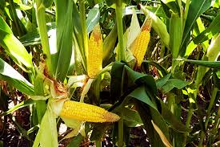
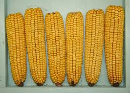
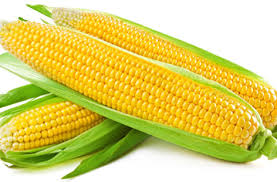
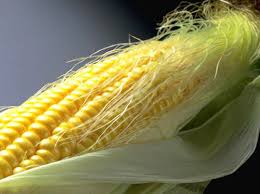
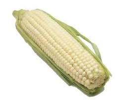

|  |
Cornstalks can vary in height, from as little as 2-3 feet at maturity to a world record height of over 30 feet tall (New York recorded a new record-breaking height at 34' in 2010). Most common varieties are 6-8 feet tall when ready to harvest, though some grown for silage (where stalks and leaves are valued) may be 14-16 feet tall. |
|  |
Dent corn is so-called because of the dent, or dimple, that forms in the top of each kernel as it begins to dry out. Also known as field corn, dent corn is the work-a-day corn that's used for animal feed, for making corn syrup, and for everything from fuel to biodegradable plastics. Dent corn is higher in starch and lower in sugar than sweet corn. |
|  |
Sweet corn is picked when immature, at what's called the "milk stage," and is enjoyed as a vegetable, rather than being left to dry and consumed as a grain. Sweet corn always has an even number of rows |
|  |
Grains with a hard, moisture-resistant hull surrounding a dense pocket of starch will pop when subjected to heat, because steam builds up inside the hull. While some other grains, like amaranth and sorghum, can also pop, popcorn is the most "explosive." |
|  |
Soaking corn in an alkali solution makes its B vitamins and amino acids more bioavailable, and (if lime-water is used as the alkali) adds calcium. The resulting corn is known as hominy, or nixtamal. Hominy can be eaten as is, coarsely ground into grits, or mashed to make masa, the dough used for tortillas. |